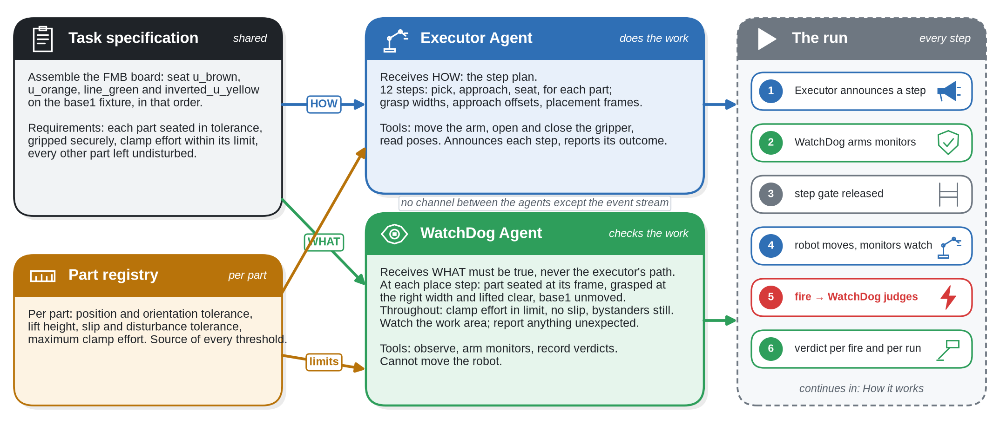
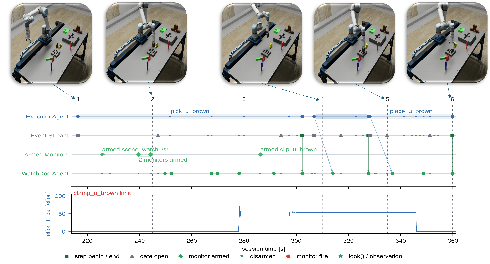
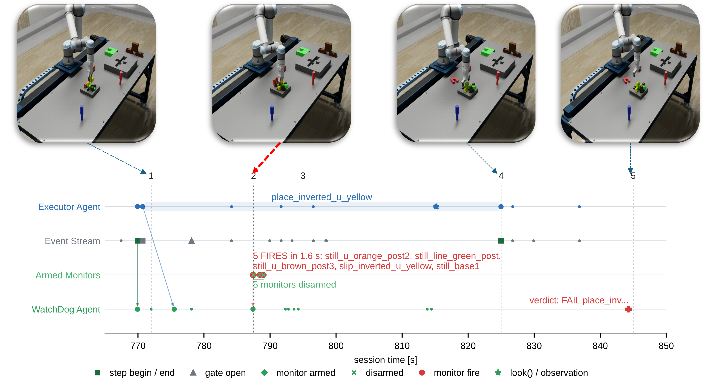
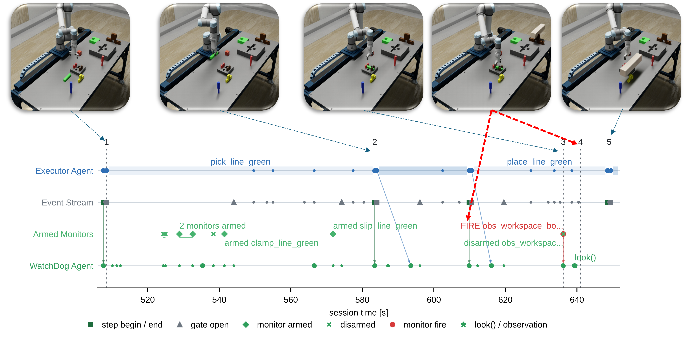

Architecture

Language-grounded AI agents can now act as planners and controllers for industrial robots based on natural-language instructions, opening a path toward flexible automation for smart manufacturing. Deploying them on the shop floor, however, requires assurance that the executed process conforms to its specification, that failures are detected in time, and that the reported record of events can be trusted. An agent that checks its own work cannot give that assurance, because its execution and its verification share the same reasoning, and the same misunderstanding can affect both. Manufacturing handles this by keeping execution separate from inspection.
We present WatchDog, a supervisory monitoring architecture that brings this separation to agentic robotic systems. WatchDog runs alongside the executing agent with no command authority, observes the cell through its own sensing channels, and takes its requirements from a separately authored specification rather than from the executor's plan. It arms runtime monitors for grasp state, insertion tolerance, disturbance of parts, applied effort, and the workspace. The monitors run at sensor rate, while the language model reasons only when arming the monitors and when judging a monitor fire. Each verdict is tied to a requirement and backed by timestamped evidence, producing a traceable conformance record.
We evaluate WatchDog in Isaac Sim, supervising an LLM executor agent on an assembly from the Functional Manipulation Benchmark over 108 runs. The results show that a separate WatchDog armed over 90% of the required checks, against 66.4% when the executor monitored itself, and caught a corrupted executor specification at the step where it occurred in 9 of 9 runs. Although a stronger model closed the coverage gap of self monitoring, the independence and latency gaps remained, and monitoring with a separate WatchDog in parallel is more time efficient than a single agent executing and monitoring itself.
A separate monitoring agent arms more of what the task requires.
Arming coverage is 90.3 to 92.7% with WatchDog (S1 to S3), against 66.4% when the executor monitors itself (S4). Fault recall is 75.8 to 100% with a separate agent, against 59.2% without.
The primitive library matters most for grasp retention.
Arming coverage is nearly identical from the library or authored from scratch (92.7% against 90.3%), but grasp retention is 97.1% from the library against 60.1% authored by the same model.
Independence catches errors in the executor's specification.
With a corrupted executor specification (Class 4), a separate WatchDog caught the violation at the step where it occurred in 9 of 9 runs, against 1 of 3 when a single agent both acted and monitored.
Scene observation is a capability limit, not a sensing one.
Across 81 detectable episodes in the baseline, the Sonnet-low agent reported none. With Opus as the monitoring model, the same episodes were reported at 55.6% at low effort and 90% at medium effort in S3.
A stronger monitoring model closes the coverage gap but not the independence gap.
Moving from Sonnet-low to Opus-medium takes S4 arming coverage from 68.4% to 99.8%, but S4 fault recall reaches 85.7%, where the same model in S3 reaches 100%.
Monitoring in parallel is cheaper in wall clock time than monitoring serially.
The scenario with no gate is the slower one: 609.3 s median for S4 against 517.3 s for S1. A fire reaches a separate agent in a median of at most 1.02 s, against 32.9 s for the self monitoring executor.




Step gate. Before the executor is allowed to begin a step, the orchestrator waits for the WatchDog agent to confirm its monitors are armed. Without it, nothing guarantees WatchDog has finished arming before the executor starts moving.
Fast and slow monitoring. The fast mode is the armed monitors: ordinary code that runs in the backend at the native rate of the signals they read, with no model in the loop. The slow mode is the language model, used only where judgment is needed: at the start of a step, to read the contract and decide which monitors to arm and how to bind them, and when a monitor fires, to judge whether the fire is a real violation or an acceptable deviation. Between these moments the agent waits, and the monitors keep watching.
Monitor library. Three monitor families, relative-frame, stationarity and effort-event, are combined based on what a step requires, or the agent writes new monitor code. Every monitor traces back to a contract clause, with thresholds sourced from the instruction text or from the per-object part registry.
Conformance record. Every arming with its bound parameters, every fire and every verdict is logged with a timestamp, a ROS 2 bag records every topic in the cell, and the session manifest stores a hash of the specification registry, so each verdict points to the clause it concerns and to the evidence that supports it.
Each video opens with the hand-over card: the task and the brief each agent received for that run.
Pick a run, then click any event in the log to jump the video there. Playback speed varies, so each event shows both its video time and its real session time.
Select an event to see its details.
108 scored runs in Isaac Sim with ROS 2 Jazzy and MoveIt 2, a UR5e arm and an OnRobot RG2 gripper, on an assembly from the Functional Manipulation Benchmark (FMB), with per-object specifications in the registry file. Each run took between 8 and 15 minutes.
Scenarios: S1, WatchDog arms library monitors only; S2, WatchDog can do either or both; S3, WatchDog writes monitor code only; S4, no separate WatchDog agent, the executor arms or writes its own monitors on top of doing the task. Classes: 1, a clean, conforming run; 2, nonconforming with a correct executor specification; 3, conforming with an extra, unspecified step that WatchDog should not flag; 4, a wrong executor specification, made by tightening the maximum clamp effort in the true registry while the executor keeps the looser value. Models: the baseline uses Claude Sonnet 5 at low reasoning effort for both roles (23 runs per scenario: five Class 1, ten Class 2, five Class 3, three Class 4). A second set uses Claude Opus 5.5 as the monitoring model on Classes 1 and 2 only, and is never pooled with the baseline.
| Metric | S1 library | S2 both | S3 authored | S4 no WatchDog |
|---|---|---|---|---|
| Runs | 23 | 23 | 23 | 23 |
| Arming coverage | 2296/2478 (92.7%) | 2236/2414 (92.6%) | 2370/2626 (90.3%) | 1809/2726 (66.4%) |
| Grasp retention | 169/174 (97.1%) | 158/164 (96.3%) | 107/178 (60.1%) | 113/188 (60.1%) |
| Parameter accuracy | 333/383 (86.9%) | 334/350 (95.4%) | 334/339 (98.5%) | 233/240 (97.1%) |
| Verdict correctness | 22/23 (95.7%) | 19/23 (82.6%) | 22/23 (95.7%) | 18/23 (78.3%) |
| Fault recall | 33/36 (91.7%) | 33/33 (100%) | 25/33 (75.8%) | 29/49 (59.2%) |
| Fault precision | 33/37 (89.2%) | 33/33 (100%) | 25/26 (96.2%) | 29/36 (80.6%) |
| False alarm rate | 0/9 (0%) | 0/9 (0%) | 0/13 (0%) | 2/10 (20.0%) |
Each cell gives the raw count and its percentage. Parameter accuracy is monitor provenance against the registry for S1 and S2, and authored parameter accuracy for S3 and S4; the two share a row but are never pooled. Metrics are pooled by summing numerators and denominators across runs.
| Metric | S1 | S2 | S3 | S4 |
|---|---|---|---|---|
| Runs | 3 | 3 | 3 | 3 |
| Step-level fault caught | 3/3 | 3/3 | 3/3 | 1/3 |
| Verdict correctness | 2/3 | 0/3 | 2/3 | 1/3 |
| Detected, misadjudicated | 1 | 3 | 1 | 0 |
| Never detected | 0 | 0 | 0 | 2 |
Step-level fault caught counts runs in which the violation was caught at the step where it occurred. The one correct S4 verdict was reached by accident: the executor missed the corrupted grasp and flagged an unrelated fault later in the run. Every WatchDog miss was a fault that was caught and then judged recovered, although a clamp past the true effort limit is not something a retry undoes.
| Condition | Runs | Obs. | Engaged | Detected | Spurious |
|---|---|---|---|---|---|
| S1 | 23 | 19 | 78.9 | 0.0 | n/a |
| S2 | 23 | 18 | 55.6 | 0.0 | 100.0 |
| S3 | 23 | 22 | 95.5 | 0.0 | 98.6 |
| S4 | 23 | 22 | 95.5 | 0.0 | 100.0 |
| S3 Opus-low | 6 | 6 | 100.0 | 55.6 | 100.0 |
| S3 Opus-medium | 5 | 5 | 100.0 | 90.0 | 50.0 |
| S4 Opus-medium | 5 | 5 | 100.0 | 100.0 | 78.9 |
| REF oracle | 2 | 2 | 100.0 | 100.0 | 40.9 |
Values are percentages. Obs. is the number of runs carrying a scene episode. Engaged is the share of runs in which the agent looked or armed an observation monitor; detected the share of detectable episodes it reported; spurious the share of observation monitor fires that were false. REF is a scripted oracle rather than an agent, included to establish that the episodes were detectable at all.
| Metric | S3 Sonnet-low | S3 Opus-low | S3 Opus-med | S4 Sonnet-low | S4 Opus-med |
|---|---|---|---|---|---|
| Runs | 15 | 6 | 5 | 15 | 5 |
| Monitoring agent | Sonnet low | Opus low | Opus med | Sonnet low* | Opus med* |
| Arming coverage | 1436/1611 (89.1%) | 641/667 (96.1%) | 613/616 (99.5%) | 1191/1740 (68.4%) | 503/504 (99.8%) |
| Grasp retention | 71/108 (65.7%) | 46/46 (100%) | 40/40 (100%) | 80/120 (66.7%) | 36/36 (100%) |
| Parameter accuracy | 218/223 (97.8%) | 64/64 (100%) | 86/86 (100%) | 166/171 (97.1%) | 90/90 (100%) |
| Verdict correctness | 15/15 (100%) | 6/6 (100%) | 5/5 (100%) | 13/15 (86.7%) | 5/5 (100%) |
| Fault recall | 14/21 (66.7%) | 4/4 (100%) | 9/9 (100%) | 23/35 (65.7%) | 12/14 (85.7%) |
| Fault precision | 14/15 (93.3%) | 4/4 (100%) | 9/9 (100%) | 23/29 (79.3%) | 12/14 (85.7%) |
| False alarm rate | 0/10 (0%) | 0/5 (0%) | 0/4 (0%) | 2/8 (25.0%) | 0/2 (0%) |
| Executor output tokens per run | 24.4k | 24.0k | 24.7k | 48.1k | 69.1k |
| WatchDog output tokens per run | 49.6k | 24.8k | 62.8k | n/a | n/a |
* In S4 the executor is its own monitor, so the model shown is the executor's. Token counts are the median of the agent's own output tokens per run, excluding cached input. Scene-observation results for these conditions are in Table 3, and their timing and monitor delivery cost in Table 5.
| Metric | S1 | S2 | S3 | S4 | S3OL | S3OM | S4OM |
|---|---|---|---|---|---|---|---|
| Runs | 23 | 23 | 23 | 23 | 6 | 5 | 5 |
| Task time (s) | 517.3 | 513.4 | 594.5 | 609.3 | 508.7 | 692.8 | 748.5 |
| Executor work (s) | 337.3 | 407.5 | 380.2 | 609.3 | 366.5 | 345.1 | 748.5 |
| WatchDog blocking (s) | 159.7 | 115.7 | 220.3 | 0.0 | 135.8 | 306.5 | 0.0 |
| Post-run adjudication (s) | 63.7 | 67.9 | 56.5 | n/a | 42.0 | 78.8 | n/a |
| Gate overhead (%) | 29.4 | 23.8 | 33.9 | n/a | 26.2 | 46.7 | n/a |
| Fire-to-agent latency (s) | 1.02 | 0.64 | 0.40 | 32.94 | 0.0037 | 0.0046 | 6.10 |
OL = Opus-low, OM = Opus-medium. Gate overhead is total executor blocking time as a percentage of total run wall time, so S4, which has no gate, has none. Fire-to-agent latency is the interval from a monitor fire to the return of the adjudicating agent's first call carrying it: a blocking wait in S1 to S3, and in S4 a poll the executor can issue only between skill calls.
In the baseline, the gate blocks the executor for 23.8 to 33.9% of run time while WatchDog arms its monitors. Even so, the scenario with no gate at all is the slower one: 609.3 s median for S4 against 517.3 s for S1, because the executor spends serially what the separate agent spends in parallel. The same holds at higher capability: 748.5 s for S4 against 692.8 s for S3. A separate agent picks up a monitor fire with a median of at most 1.02 s, while the self monitoring executor takes 32.9 s at Sonnet-low and 6.1 s at Opus-medium, because it cannot poll until its current skill call returns. The evidence arrives on time in both arrangements, but only the separate agent is free to act on it while the arm is still moving.
@article{nasr2027watchdog,
title = {WatchDog: An Independent Inspector for Agentic Robotic Manufacturing},
author = {Nasr, Mohammad and Starly, Binil},
journal = {Manufacturing Letters},
note = {55th SME North American Manufacturing Research Conference (NAMRC 55)},
year = {2027}
}